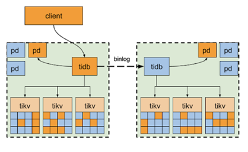
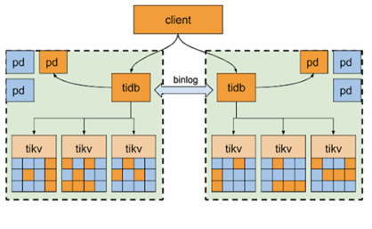

TiDB-Binlog 简介
TiDB Binlog 组件用于收集 TiDB 的 binlog，并提供实时备份和同步功能。该组件在功能上类似于 MySQL 的主从复制，MySQL 的主从复制依赖于记录的 binlog 文件，TiDB Binlog 组件也是如此，主要的不同点是 TiDB 是分布式的，因此需要收集各个 TiDB 实例产生的 binlog，并按照事务提交的时间排序后才能同步到下游。如果你需要部署 TiDB 集群的从库，或者想订阅 TiDB 数据的变更输出到其他的系统中，TiDB Binlog 则是必不可少的工具。
TiDB Binlog 组件架构

该架构的主要特点是：
- 多个 Pump 形成一个集群，可以水平扩容，各个 Pump 可以均匀地承担业务的压力。
- TiDB 通过内置的 Pump Client 将 binlog 分发到各个 Pump，即使有部分 Pump 出现故障也不影响 TiDB 的业务。
- Pump 内部实现了简单的 kv 来存储 binlog，方便对 binlog 数据的管理。
- binlog 排序逻辑由 Pump 来做，而 Pump 是可扩展的，这样就能提高整体的同步性能。
- Drainer 只需要依次读取各个 Pump 的 binlog 进行归并排序，这样可以大大节省内存的使用，同时也更容易做内存控制。
两中心异步复制方案
利用 TiDB-Binlog 异步复制数据的特性，我们可以利用其搭建一套主从集群，准实时的将主机群的数据同步到异地的从集群。这个场景在金融行业是比较常见的，除了承接主要业务访问的主机群需要两地三中心的高可用部署之外，还要有有一个数据异地容灾备份系统。这样的考虑出发点在于当出现极端场景，导致主机群完全无法提供服务后，异地容灾机房可以顶上来；同时异地容灾机房还可以承载业务 T+1 的报表查询业务，减少了对主机群的影响。
两中心双集群部署方案，顾名思义是在两个中心分别部署独立TiDB集群，通过 binlog 进行数据同步，类似于传统的 MySQL 中 master/slave 主从复制方案。一个集群作为主集群，负责应用接入提供读写服务，另一个集群作为从集群，负责同步主集群数据以及故障接管。
优势
- 避免因网络传输延迟带来的性能影响。
- 两中心集群各自独立，减少集群间互相影响，减少两集群同时故障的概率。

当主集群所在的中心发生故障时，业务可以切换至从集群。因两集群采用 binlog 异步复制，无法保证数据一致性，所以极端情况下会有部分数据缺失。
劣势
- 无法保证两集群数据一致性。 *正常情况下从集群只负责同步数据，存在较大的资源浪费。
双集群互为备份方案
另一种两中心架构部署方案是在之前方案的基础上进行一定的延伸，同样两个中心部署两套独立 TiDB 集群，将业务拆分为两个库，每个库分别放在一个集群（数据中心）中，接入每个数据中心的业务请求只访问本地库，两个集群之间通过 binlog 将本数据中心业务所涉及的库中的数据变更同步到对端，互为备份。

这样就能实现两数据中心分库双活，解决从集群资源浪费的问题，但两集群的架构方案仍然无法保证数据一致性，而且此分库方案对应用可能有一定侵入性。
环境要求
- 服务器要求
Pump 和 Drainer 均可部署和运行在 Intel x86-64 架构的 64 位通用硬件服务器平台上。在开发、测试和生产环境下，对服务器硬件配置的要求和建议如下：
| 服务 | 部署数量 | CPU | 磁盘 | 内存 |
|---|---|---|---|---|
| Pump | 3 | 8核+ | SSD, 200 GB+ | 16G |
| Drainer | 1 | 8核+ | SAS, 100 GB+ （如果输出 binlog 为本地文件，磁盘大小视保留数据天数而定） | 16G |
- 网络要求
单数据中心内部网络要求：
业务网络满足千兆及以上带宽，私网满足万兆及以上带宽。
跨数据中心之间网络要求：
跨数据中心带宽至少 300M 及以上，同时确保数据中心内部及跨数据中心的所有节点之间私网互联互通，业务网络之间不需要互联互通。
搭建步骤
- 部署 Pump
- 中控机上修改 tidb-ansible/inventory.ini ( 这里默认用户在上下游已经成功部署好了 TiDB 集群 )
- 设置 enable_binlog = True，表示 TiDB 集群开启 binlog。
```
binlog trigger
- 设置 enable_binlog = True，表示 TiDB 集群开启 binlog。
```
- 中控机上修改 tidb-ansible/inventory.ini ( 这里默认用户在上下游已经成功部署好了 TiDB 集群 )
enable_binlog = True
2. 为 pump_servers 主机组添加部署机器 IP。
Binlog Part
[pump_servers] 172.16.10.72 172.16.10.73 172.16.10.74
3. 默认 Pump 保留 7 天数据，如需修改可修改 tidb-ansible/conf/pump.yml（TiDB 3.0.2 及之前版本中为 tidb-ansible/conf/pump-cluster.yml）文件中 gc 变量值，并取消注释。
global:
an integer value to control the expiry date of the binlog data, which indicates for how long (in days) the binlog data would be stored
must be bigger than 0
gc: 7
4. 请确保部署目录有足够空间存储 binlog，详见[调整部署目录](https://pingcap.com/docs-cn/stable/how-to/deploy/orchestrated/ansible#%E8%B0%83%E6%95%B4%E9%83%A8%E7%BD%B2%E7%9B%AE%E5%BD%95)，也可为 Pump 设置单独的部署目录。
Binlog Part
[pump_servers] pump1 ansible_host=172.16.10.72 deploy_dir=/data1/pump pump2 ansible_host=172.16.10.73 deploy_dir=/data2/pump pump3 ansible_host=172.16.10.74 deploy_dir=/data3/pump
2. 部署并启动含 Pump 组件的 TiDB 集群。
1. 部署 pump_servers 和 node_exporters
$ ansible-playbook deploy.yml --tags=pump -l ${pump1_ip},${pump2_ip},[${alias1_name},${alias2_name}]
上述命令中，逗号后不要加空格，否则会报错
2. 启动 pump_servers
$ ansible-playbook start.yml --tags=pump
3. 更新并重启 tidb_servers
$ ansible-playbook rolling_update.yml --tags=tidb
4. 更新监控信息
$ ansible-playbook rolling_update_monitor.yml --tags=prometheus
3. 查看 Pump 服务状态
使用 binlogctl 查看 Pump 服务状态，pd-urls 参数请替换为集群 PD 地址，结果 State 为 online 表示 Pump 启动成功
$ cd /home/tidb/tidb-ansible && resources/bin/binlogctl -pd-urls=http://172.16.10.72:2379 -cmd pumps INFO[0000] pump: {NodeID: ip-172-16-10-72:8250, Addr: 172.16.10.72:8250, State: online, MaxCommitTS: 403051525690884099, UpdateTime: 2018-12-25 14:23:37 +0800 CST} INFO[0000] pump: {NodeID: ip-172-16-10-73:8250, Addr: 172.16.10.73:8250, State: online, MaxCommitTS: 403051525703991299, UpdateTime: 2018-12-25 14:23:36 +0800 CST} INFO[0000] pump: {NodeID: ip-172-16-10-74:8250, Addr: 172.16.10.74:8250, State: online, MaxCommitTS: 403051525717360643, UpdateTime: 2018-12-25 14:23:35 +0800 CST}
2. 记录 TSO 断点信息
Drainer 在初次启动时需要获取 initial_commit_ts 这个时间戳信息，为了保证数据的完整性，需要进行全量数据的备份与恢复。此时 initial_commit_ts 的值必须是全量备份的时间戳。为了保证这个时间戳包含备份数据之后的所有数据变更，我们把这一步操作放到全备之前来做。
$ cd /home/tidb/tidb-ansible && resources/bin/binlogctl -pd-urls=http://127.0.0.1:2379 -cmd generate_meta INFO[0000] [pd] create pd client with endpoints [http://192.168.199.118:32379] INFO[0000] [pd] leader switches to: http://192.168.199.118:32379, previous: INFO[0000] [pd] init cluster id 6569368151110378289 2018/06/21 11:24:47 meta.go:117: [info] meta: &{CommitTS:400962745252184065}
该命令会输出 meta: &{CommitTS:400962745252184065}，其中 CommitTS 的值即所需的时间戳。
3. 逻辑备份全量数据，使用 mydumper 备份主库的数据。
4. 全量数据传输并恢复到备端，使用 loader 恢复数据。
5. 部署 Drainer 服务并开启 Drainer 同步实时增量数据
1. 修改 tidb-ansible/inventory.ini 文件。为 drainer_servers 主机组添加部署机器 IP，initial_commit_ts 请设置为获取的 initial_commit_ts，仅用于 Drainer 第一次启动。
[drainer_servers]
drainer_mysql ansible_host=172.16.10.71 initial_commit_ts="402899541671542785"
2. 修改配置文件
cd /home/tidb/tidb-ansible/conf && cp drainer.toml drainer_mysql_drainer.toml && vi drainer_mysql_drainer.toml
```
[syncer]
# downstream storage, equal to --dest-db-type
# Valid values are "mysql", "file", "tidb", "kafka".
db-type = "mysql"
# the downstream MySQL protocol database
[syncer.to]
host = "172.16.10.72"
user = "root"
password = "123456"
port = 3306
- 部署 Drainer
ansible-playbook deploy_drainer.yml - 启动 Drainer
这时 Drainer 已经开始同步数据了，在监控中能够观察到数据同步情况。ansible-playbook start_drainer.yml数据校验
为了验证主从集群的数据是一致的，我们提供了数据校验工具：sync-diff-inspector，该工具同时提供了数据修复功能（适用于修复少量不一致的数据），具体使用方法可以在登录 PingCAP 官网搜索 sync-diff-inspector，这里就不再赘述。
总结
TiDB-Binlog 提供了两套 TiDB 集群之间，或者上游是 TiDB 下游是 MySQL 之间的数据同步。同时 Drainer 提供了输出到 PB 文件，通过这个功能可以完成增量数据的备份目的。需要注意的地方是 TiDB-Binlog 的同步是异步的，主从数据同步延迟受上下游集群硬件性能影响而有所不同，正常情况下延迟能稳定在秒级。其次使用过程中需要注意同步表必须要有主键。定期对主从集群的校验能够及时发现数据同步发生的异常问题。使用中如有其它问题可以联系 PingCAP 官方人员跟进解决。